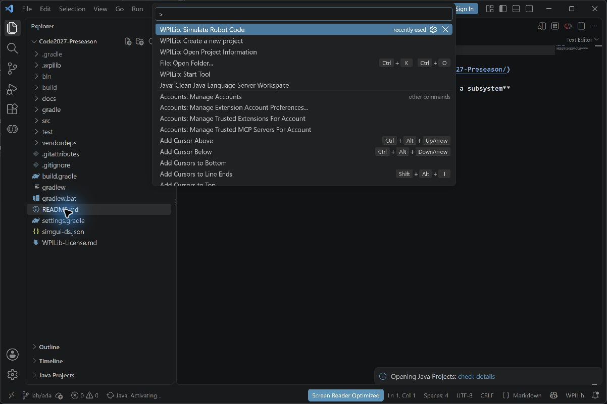
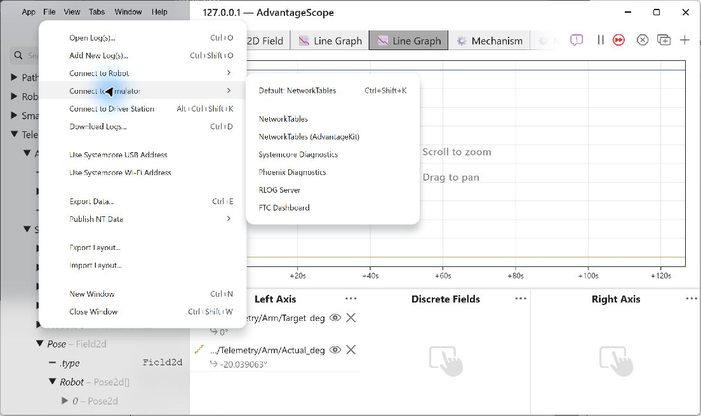
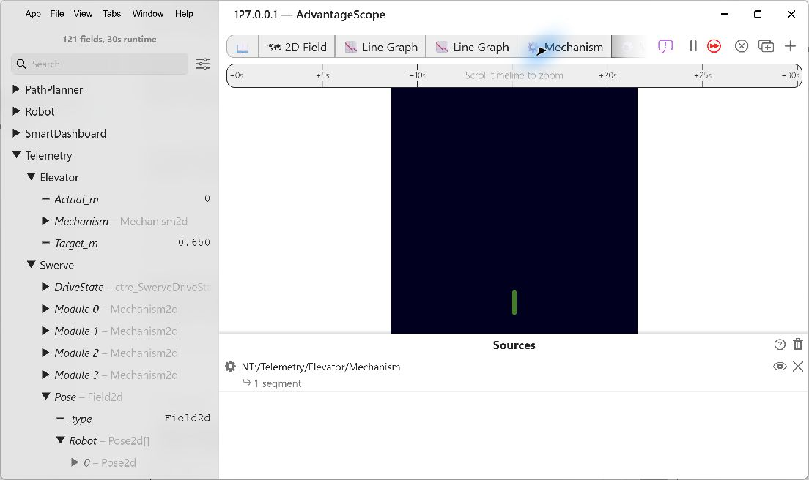
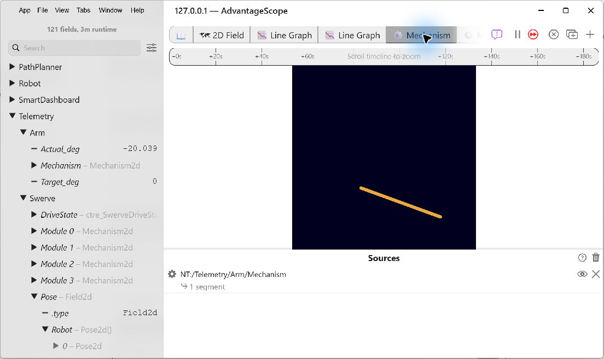

Adding your subsystem
Understand the subsystem, create it, and see it in the simulator.
A class for one mechanism
Open src/main/java/first/robot/subsystems/Elevator.java in WPILib 2027 VS Code. This is the main file we will be editing. The new code from Mr. Leibs includes this class and its simulation; we’ll add its behavior in the following sections.
Below the imports, find this existing class declaration:
public final class Elevator extends SubsystemBase {public final class Arm extends SubsystemBase {A class describes an object’s data and behavior. extends SubsystemBase means our class inherits WPILib’s subsystem behavior. When we create an instance, it registers with the command scheduler, which calls its periodic() method and keeps track of commands that use it.
The subsystem owns its motor
Existing code—leave it as it is. Just inside the class, find these two fields. sim holds the prepared simulation helper; motor holds the Talon FX object:
private final ElevatorSim sim = new ElevatorSim();
private final TalonFX motor = new TalonFX(ElevatorConstants.MOTOR_CAN_ID, TunerConstants.kCANBus);private final ArmSim sim = new ArmSim();
private final TalonFX motor = new TalonFX(ArmConstants.MOTOR_CAN_ID, TunerConstants.kCANBus);TalonFX is the object our code uses to talk to the motor controller. new creates that object, and motor is the name we use to refer to it. ElevatorConstants.MOTOR_CAN_ID supplies the motor controller’s address on the CAN bus, the connection between the robot computer and motor controllers. We keep that address in Constants.java so it has a name and one place to change it.
Only this subsystem should decide how its motor is controlled. The private field prevents other classes from accessing this motor object directly. Other code will ask the subsystem to move to a height or angle; the subsystem will decide what to send to the motor. final keeps this field referring to the same motor-controller object.
Recognize the constructor
Existing code—leave it as it is for now. Immediately below the fields, find the constructor. It has the same name as the class and runs when we create an instance:
public Elevator() {
// TODO 6c: Configure the sensor ratio here.
// TODO 7c: Add gains and Motion Magic settings here.
// Setup Simulation
// Sets the simulated motor model. This setup is prepared for you; leave it in place.
motor.getSimState().setMotorType(TalonFXSimState.MotorType.KrakenX60);
}public Arm() {
// TODO 6c: Configure the sensor ratio here.
// TODO 7c: Add gains and Motion Magic settings here.
// Setup Simulation
// Sets the simulated motor model. This setup is prepared for you; leave it in place.
motor.getSimState().setMotorType(TalonFXSimState.MotorType.KrakenX60);
}TODO 7 is for the later Controllers section. The lines under // Setup Simulation are already prepared; keep them in place.
Set the gear ratio and find its import
Open src/main/java/first/robot/Constants.java. Under ElevatorConstants, find TODO 1 and the GEAR_RATIO line below it:
Before — red lines will change
public static final double HIGH_METERS = 0.65;
// TODO 1: Set the gear ratio using the Mechanisms walkthrough.
public static final double GEAR_RATIO = 1.0; // motor turns per drum turnBefore — red lines will change
public static final double HIGH_DEGREES = 65.0;
// TODO 1: Set the gear ratio using the Mechanisms walkthrough.
public static final double GEAR_RATIO = 1.0; // motor turns per arm turnReplace the TODO and placeholder ratio with the correct value we determined earlier. Keep the preset above it unchanged:
After — green lines are new or changed
public static final double HIGH_METERS = 0.65;
public static final double GEAR_RATIO = 12.0; // motor turns per drum turnAfter — green lines are new or changed
public static final double HIGH_DEGREES = 65.0;
public static final double GEAR_RATIO = 80.0; // motor turns per arm turnSave the file. These constants describe your mechanism:
MOTOR_CAN_ID: the motor controller’s CAN address, already set to 20.GEAR_RATIO: now 12 motor turns per drum turn.METERS_PER_DRUM_TURN: the drum circumference that converts drum turns to elevator height, calculated fromDRUM_RADIUS_METERS.MIN_METERSandMAX_METERS: the allowed positions.LOW_METERSandHIGH_METERS: the two goal presets our buttons will request. LOW is zero; HIGH is 0.65 meters. These are positions we choose to move to; MIN and MAX define the allowed range.
Return to your subsystem file. Find this existing import above the class declaration; it is already supplied, so you do not need to add it:
import first.robot.Constants.ElevatorConstants;import first.robot.Constants.ArmConstants;The import lets us use the shorter name ElevatorConstants in this file. For example, ElevatorConstants.GEAR_RATIO reads the ratio you just set. Importing a class makes its name available; it does not create a subsystem.
Create an instance in RobotContainer
Open src/main/java/first/robot/RobotContainer.java. Find this existing block near the top of the class:
Before — replace the red TODO line
public final CommandSwerveDrivetrain drivetrain = TunerConstants.createDrivetrain();
// TODO 2: Add your Elevator or Arm subsystem field here.Replace only the TODO 2 comment with the highlighted subsystem field. Keep the existing drivetrain line, as shown:
After — the new subsystem field is green
public final CommandSwerveDrivetrain drivetrain = TunerConstants.createDrivetrain();
private final Elevator elevator = new Elevator();After — the new subsystem field is green
public final CommandSwerveDrivetrain drivetrain = TunerConstants.createDrivetrain();
private final Arm arm = new Arm();new Elevator() creates an instance—the actual object described by the class. Creating it also runs its constructor and creates its motor object. The field named elevator keeps it available to the rest of RobotContainer, including the button-binding methods. private final means only this class can access the field directly and the field will keep referring to this subsystem.
See your mechanism in the simulator
- Save your changes. Open the Command Palette with Ctrl+Shift+P. Choose WPILib: Simulate Robot Code, select Sim GUI if prompted, and wait for robot startup. Leave the simulated robot disabled.
- Open the desktop AdvantageScope (WPILib) installed with the 2027 tools. Choose File → Connect to Simulator and select NetworkTables if prompted.
- Add a Mechanism tab. In the sidebar expand
Telemetry → Elevatorand drag theMechanismfield into the tab.




Checkpoint. Creating the subsystem also creates its prepared simulation and drawing. The elevator sits at the bottom. Stop the run in VS Code before editing.
You now have an instance of your subsystem in RobotContainer, and you’ve seen its drawing in the simulator. Next, we’ll give it a goal command and connect that command to a button.